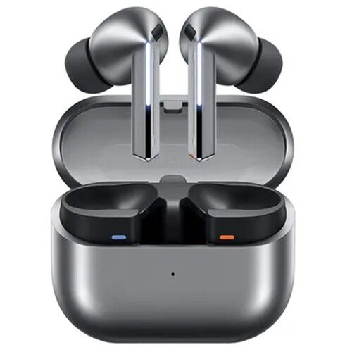

삼성전자 Samsung
KR · 대한민국 · 글로벌 종합가전, 비스포크 · 대표 제품: 비스포크 냉장고, 그랑데 세탁기, 제트 청소기
추천 제품 12종 2026.11.27 FRI · No.006 기준
 삼성 QLED TV KQ85QF6AAFXKR 85인치1,519,000원TV · 정가 대비 41%↓ · 쿠팡 리뷰 3,605 · 소싱 점수 3.5
삼성 QLED TV KQ85QF6AAFXKR 85인치1,519,000원TV · 정가 대비 41%↓ · 쿠팡 리뷰 3,605 · 소싱 점수 3.5 삼성 갤럭시워치8 40mm 블루투스 SM-L320N398,050원워치 · 쿠팡 리뷰 9,128 · 평점 5.0 · 소싱 점수 3.5
삼성 갤럭시워치8 40mm 블루투스 SM-L320N398,050원워치 · 쿠팡 리뷰 9,128 · 평점 5.0 · 소싱 점수 3.5
삼성 갤럭시 버즈3 프로 SM-R630N154,160원이어폰 · 쿠팡 리뷰 1,240 · 평점 5.0 · 소싱 점수 3.5 삼성 비스포크 AI 스팀 울트라 VR90F01AAG1,493,460원청소 · 다나와 로봇청소기 인기 2위 · CES 2026 AI 기능 · 소싱 점수 3.0
삼성 비스포크 AI 스팀 울트라 VR90F01AAG1,493,460원청소 · 다나와 로봇청소기 인기 2위 · CES 2026 AI 기능 · 소싱 점수 3.0 삼성 스마트TV KU43F6050FFXKR 43인치437,980원TV · 정가 대비 12%↓ · 쿠팡 리뷰 10 · 소싱 점수 3.0
삼성 스마트TV KU43F6050FFXKR 43인치437,980원TV · 정가 대비 12%↓ · 쿠팡 리뷰 10 · 소싱 점수 3.0 삼성 OLED TV KQ65SF8EAEXKR 65인치2,290,000원TV · 쿠팡 리뷰 221 · 평점 5.0 · 소싱 점수 3.0
삼성 OLED TV KQ65SF8EAEXKR 65인치2,290,000원TV · 쿠팡 리뷰 221 · 평점 5.0 · 소싱 점수 3.0 삼성 OLED TV KQ48SH85AEXKR 48인치1,140,000원TV · 정가 대비 36%↓ · 쿠팡 리뷰 46 · 소싱 점수 3.0
삼성 OLED TV KQ48SH85AEXKR 48인치1,140,000원TV · 정가 대비 36%↓ · 쿠팡 리뷰 46 · 소싱 점수 3.0 삼성 갤럭시 S26 256GB 자급제 SM-S942N1,193,000원스마트폰 · 정가 대비 15%↓ · 쿠팡 리뷰 10,178 · 소싱 점수 3.0
삼성 갤럭시 S26 256GB 자급제 SM-S942N1,193,000원스마트폰 · 정가 대비 15%↓ · 쿠팡 리뷰 10,178 · 소싱 점수 3.0 삼성 갤럭시 Z 폴드8 256GB 자급제 SM-F971N2,164,100원스마트폰 · 쿠팡 리뷰 6,341 · 평점 5.0 · 소싱 점수 3.0
삼성 갤럭시 Z 폴드8 256GB 자급제 SM-F971N2,164,100원스마트폰 · 쿠팡 리뷰 6,341 · 평점 5.0 · 소싱 점수 3.0 삼성 갤럭시 링 티타늄 블랙 5호309,000원워치 · 쿠팡 리뷰 145 · 평점 5.0 · 소싱 점수 3.0
삼성 갤럭시 링 티타늄 블랙 5호309,000원워치 · 쿠팡 리뷰 145 · 평점 5.0 · 소싱 점수 3.0 삼성 갤럭시탭 S11 128GB Wi-Fi (보호필름 패키지)1,215,000원태블릿 · 쿠팡 리뷰 95 · 평점 5.0 · 소싱 점수 3.0
삼성 갤럭시탭 S11 128GB Wi-Fi (보호필름 패키지)1,215,000원태블릿 · 쿠팡 리뷰 95 · 평점 5.0 · 소싱 점수 3.0 삼성 비스포크 AI 콤보 세탁건조기 WD80H25BHW2,610,710원대형가전 · 다나와 올인원 세탁건조기 인기 2위 · 소싱 점수 2.5
삼성 비스포크 AI 콤보 세탁건조기 WD80H25BHW2,610,710원대형가전 · 다나와 올인원 세탁건조기 인기 2위 · 소싱 점수 2.5
관련 뉴스
- 카운터포인트 "올해 스마트폰 출하 13.9% 감소"…역대 최대 폭
2025년 12억 5,500만 대에서 올해 10억 8,000만 대로 줄어 2022년(−11.3%)보다 감소 폭이 큽니다. 2027년엔 6% 더 줄어 10억 1,800만 대, 2028년엔 6% 반등할 전망이며 화웨이는 12% 늘고 애플·삼성은 각각 1% 줄어듭니다.
2026.11.26 · 안드로이드 헤드라인스(Android Headlines) - 삼성전자, 생활가전사업부를 가전·냉난방공조 사업팀으로 분리
DX부문 조직개편으로 생활가전(DA)사업부를 가전(HA) 사업팀과 냉난방공조(HVAC) 사업팀으로 나누고, 경영지원담당 직속 코퍼레이트 디벨롭먼트(M&A)팀을 신설했습니다. 김철기 DA사업부장이 HA 사업팀장을 겸합니다.
2026.11.26 · 한국경제TV - 삼성 TV·모니터 가동률 81.1%로 상승…올해 TV 출하 1억 9,348만 대 전망
1~9월 삼성 TV·모니터 공장 가동률은 81.1%(전년 77.2%), LG전자 TV는 72.2%(전년 71.1%)로 올랐습니다. LG전자 MS사업본부 3분기 영업이익은 1,467억 원으로 전 분기보다 33.1% 줄었고, 트렌드포스는 LG 미니 LED TV 출하를 175만 대(800% 이상 증가)로 내다봤습니다.
2026.11.25 · 파이낸셜뉴스 - 3분기 세계 스마트폰 출하 19% 감소, 평균 판매가는 444달러로 최고
카운터포인트리서치 집계로 3분기 출하는 1년 전보다 19% 줄었지만 매출은 약 1,150억 달러로 3% 늘었고, 평균 판매가는 27% 오른 444달러로 역대 최고였습니다. 옴디아 기준 삼성 출하는 5,780만 대(−5%), 오포는 39%·비보는 33% 줄었습니다.
2026.11.26 · 아이뉴스24 - 삼성 MX사업부장 직속 '홈 AI팀' 신설…메모리 개발은 사업부장 직속으로
최원준 사장이 이끄는 MX사업부에 사업부장 직속 홈 AI팀을 새로 만들었습니다. DS부문은 메모리 개발 조직을 사업부장 직속으로 바꾸고, 미주법인장에는 윤하룡 부사장을 선임했습니다.
2026.11.26 · 서울신문 - 삼성 로봇 핵심 인재 상무 승진…휴머노이드 공개 임박 관측
2027년 정기 임원 인사 승진자는 131명으로 지난해 161명보다 18.6% 줄었지만, 형승용 로보틱스시스템그룹장과 구동한 피지컬 AI랩장이 상무로 승진했습니다. 삼성은 CES 공개·양산 일정을 공식 발표하지 않았습니다.
2026.11.26 · 현대경제 - 삼성 MX 올해 영업이익 4,200억 원 추정…3분기 점유율은 22%
증권가는 삼성 MX·네트워크사업부의 올해 영업이익을 4,200억 원(2025년 13조 원)으로 추정합니다. 카운터포인트 기준 3분기 점유율은 삼성 22%, 애플 21%, 샤오미 12%이며 애플의 매출 점유율은 50%입니다.
2026.11.11 · 지디넷코리아 - 중남미 3분기 스마트폰 출하 24% 감소…애플 4위로
카운터포인트 집계로 삼성이 점유율 35%(출하 −15%)로 1위를 지켰고 모토로라 18%, 샤오미 14%(−34%), 애플 9%(−10%), 아너 8% 순입니다. 애플 점유율은 7%에서 2%p 올라 5위에서 4위가 됐습니다.
2026.11.25 · 9to5Mac
가격·순위는 2026-11-27 다나와 공개 자료 기준이며 판매처마다 다를 수 있습니다. 각 제품 페이지에 출처가 있습니다.